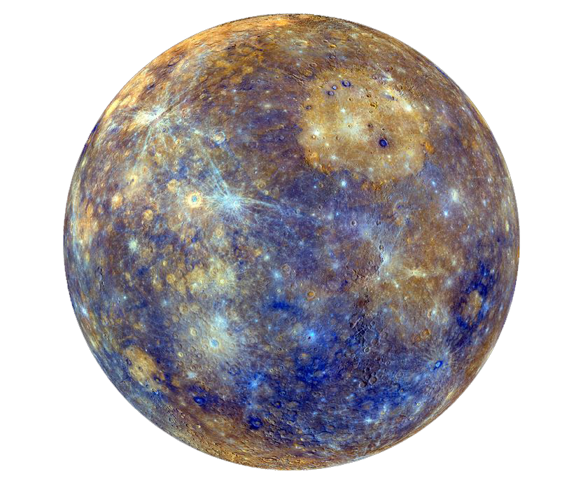

<!DOCTYPE html>
<html lang="en">
<head>
    <meta charset="UTF-8">
    <meta name="viewport" content="width=device-width, initial-scale=1.0">
    <meta http-equiv="X-UA-Compatible" content="ie=edge">
    <link rel="stylesheet" href="style.css">
    <link rel="shortcut icon" href="images/logo.jpg" type="image/x-icon">
    <link href="https://fonts.googleapis.com/css?family=Roboto" rel="stylesheet">
    <title>Estamos sozinhos?/title>
</head>
<body>
    <!--GRID (HTML): escolher quais elementos serão utilizados para preenchermos a grade-->
    <header></header>
    <nav>
        <a href="https://gizmodo.uol.com.br/paradoxo-fermi/">Paradoxo de Fermi</a>
        <a href="">Formas de vida</a>
        <a href="">Estamos sozinhos?</a>
    </nav>
    <section>.</section>
    <aside>
        <h2>O paradoxo de fermi</h2>
        <p>Paradoxo de Fermi é a aparente contradição entre as altas estimativas de probabilidade de existência de civilizações extraterrestres e a falta de evidências para, ou contato com, tais civilizações. </p>
        <p>É um conflito entre um argumento de escala e probabilidade e a falta de evidências. Uma definição mais completa poderia ser apresentada como:

                O aparente tamanho e idade do universo sugerem que muitas civilizações extraterrestres tecnologicamente avançadas deveriam existir.
                Entretanto, esta hipótese parece inconsistente com a falta de evidência observacional para suportá-la.</p>
    </aside>
    <footer>
        <div>
            
            
            
            
            
        </div>
    </footer>
</body>
</html>